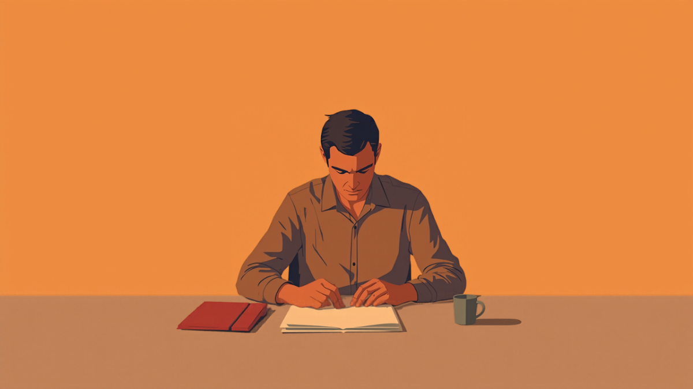
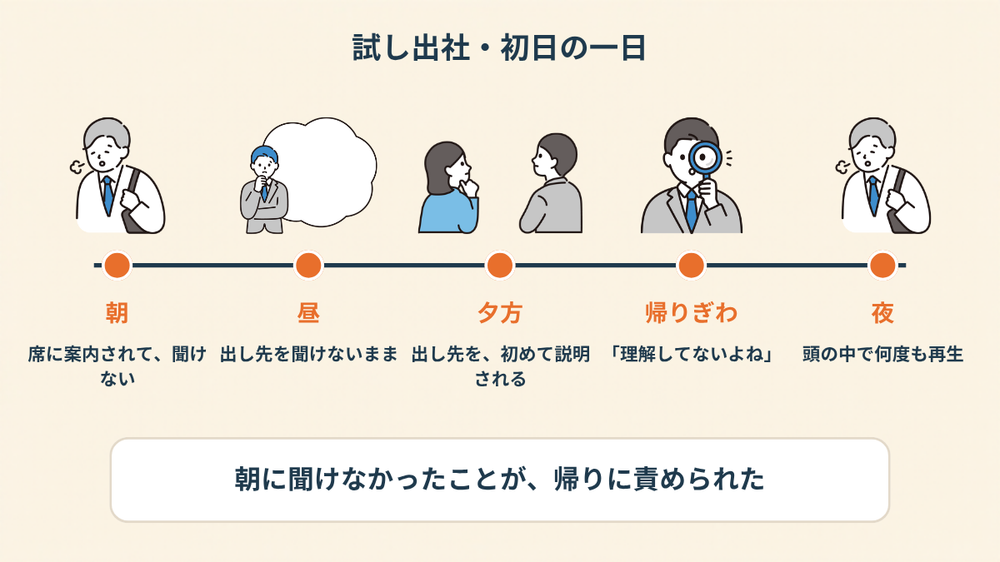
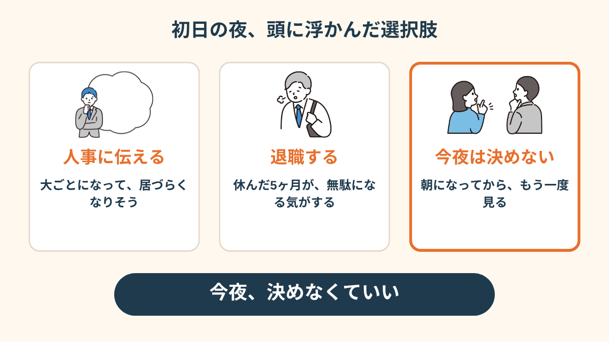
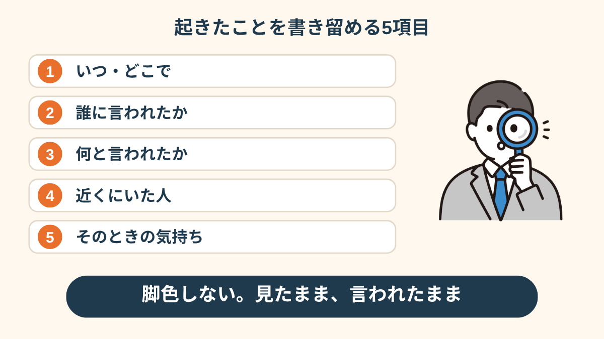
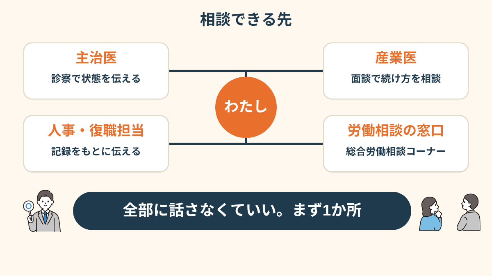
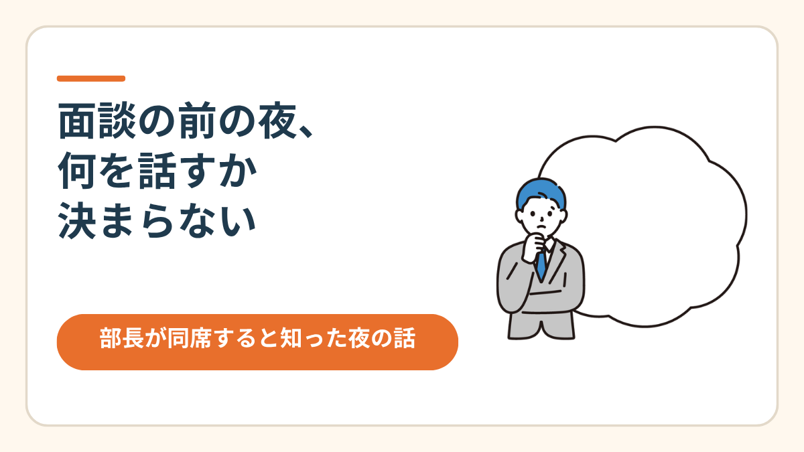
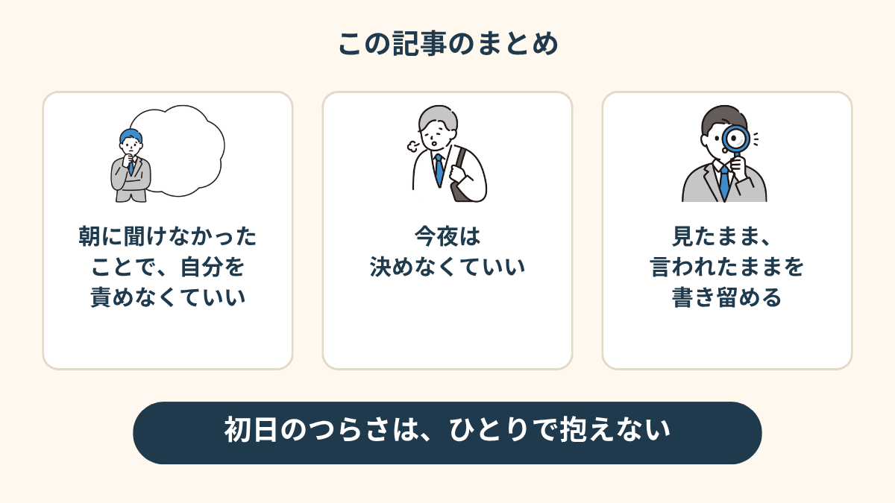

試し出社の初日、帰りぎわに、上司にそう言われました。
その「さっき」は、帰りぎわのことで。
朝は、誰からも何も聞いていませんでした。
初日の朝、出し先は誰も教えてくれなかった
休職して5ヶ月目。
復職の前に、まず職場に慣れるための「試し出社」が始まる日でした。
前の晩は、ほとんど眠れませんでした。
当日は、いつもより1時間早く家を出て、9時前には会社の近くのコンビニにいた。
入口の前で何度も深呼吸して、やっと中に入りました。
案内された席は、普段は使っていない会議スペースの端っこ。
上司は「じゃあ、今日からよろしく」と言って、自席に戻っていきました。
毎日書く報告書をどこに出すのか、その場では聞けなかったし、教えてももらえなかった。
聞けばよかったんですけどね。初日は、上司の席に歩いていくだけで、足が重かった。


帰りぎわの「理解してないよね」
夕方、帰る支度をしていると、上司が来ました。
「そういえば、報告書の出し先ね」と、そこで初めて説明が始まった。
私は「あ、はい、わかりました」と答えて、メモを取ろうとした。
そのあとの一言が、これでした。
「朝のうちに言ったけど、理解してないよね」
言ってない。
でも、その場で「朝は聞いていません」とは言えませんでした。
言ったら、言い訳をする人になる気がして。
さらに、帰りがけに、もう一言。
「このスペース、ちょっとタバコくさいね」
その場所は、私が一日座っていた席でした。
上司の部下は、その場にいない。つまり、私に向けた言葉に聞こえた。
「試し出社の初日って、こっちは一日中、緊張で息を止めてるんですよ。そこで『理解してない』って言われると、なんか、全部否定された気がして。帰りの電車、ずっと窓を見てました」

辞めるか、人事に言うか。その夜は決めなかった
家に帰ってからは、ずっと2択でした。
人事に言うか、もう辞めるか。
人事に言ったら、大ごとになって、余計に居づらくなるかもしれない。
辞めたら、ここまで休んだ5ヶ月は何だったんだろう。
どっちを選んでも、後悔する未来しか浮かばなくて、結局、夜中の2時まで同じことを考えていました。

翌朝、少しだけ気づいたことがあります。
夜中に出した結論は、だいたい、朝には違って見える。
だったら、今夜は決めなくてよかったのかもしれない。
起きたことを、時系列で書いた
次の日、仕事に行く前に、まず手帳に書きました。
気持ちの整理というより、「何があったか」を、そのまま並べる感じ。
国の「職場復帰支援の手引き」にも、復職の前に職場に慣れるための「試し出勤」という考え方が出てきます。
実際にどう進めるかは会社によって違うので、「どうなっているのか」を言葉にしておく意味はあると思いました（2026年10月時点の情報です）。

書いていて、少しだけ楽になりました。
頭の中でぐるぐる回していたものが、紙の上に置けたからだと思います。
「朝は聞いていない」も、そのまま書きました。
「日付と言われた言葉だけ、スマホのメモに残してました。使うかどうかは決めてなかったけど、あるだけで『ちゃんと見てた自分』がいる感じで、少し落ち着きました」
話せる先を、あとから並べてみた
数日たって、「そもそも誰に話していい話なんだろう」と考えました。
主治医、産業医、人事、復職を担当している人、会社の外の窓口。
全部に話すのは無理なので、一番話しやすいところから、1か所だけ。

私は、次の診察で、主治医に話しました。
そのあと、産業医の面談で、試し出社の続け方を相談する流れになりました。

産業医面談の前夜、何を話すか決まらなかった話 →
この記事に、聞いてみたいことはありますか？
「自分の場合はどうなんだろう」と思ったことを、気軽に書いてみてください。いただいた質問は個別にお返事したうえで、匿名で記事にすることがあります。